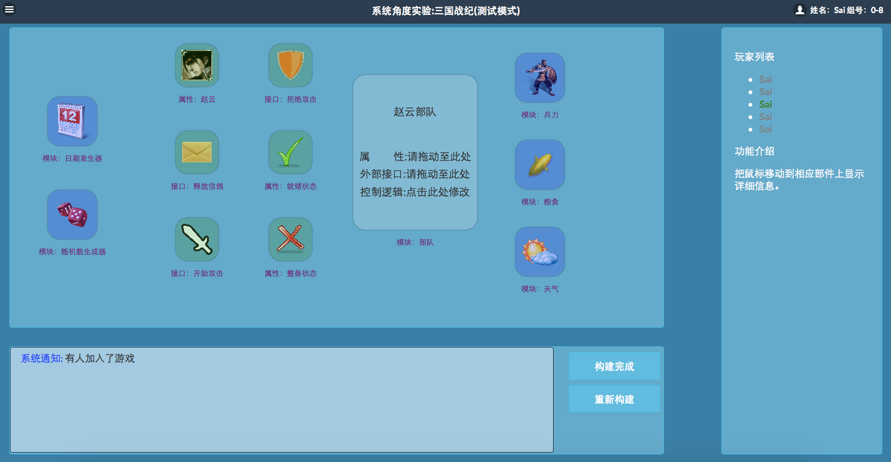
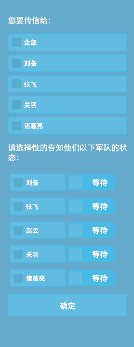
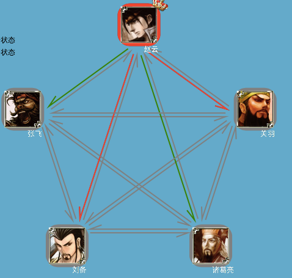
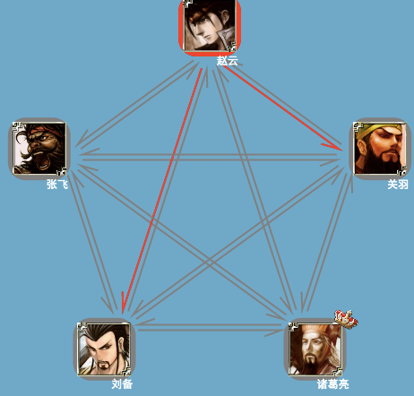
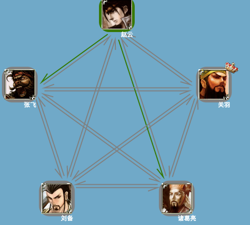

基础概念：
部队子系统是本实验中你所能控制的最小的抽象化操作单元。一个子系统由若干相应的模块，关系，接口，逻辑构成。
为了使你的部队能够顺利参加即将开始的三国战役，你需要构建这样具备如下功能的一个部队子系统：
现在可供你使用的模块，属性，接口已经在游戏模式中显示，把鼠标悬浮在相应的部件上，右侧区域将显示该部件的详细信息。
在本场战役持续0~n天，每天的持续时间为现实时间20分钟。战役由你的全部组员共5人参加，其中5人的身份之中，1人为奸臣，其余为忠臣。在新的一天到达时，根据前一小节所描述，每个部队子系统状态都将发生变化，同时你的身份也将随机的发生变化。你的子系统和其余子系统交互的方式仅限信鸽通信，和作出决策（每一天只能作出一次决策）。其中通信用于告知自己或者其他部队的状态（假设通信过程无丢失，无错误，无消息泄密），各位玩家之间的拓扑连接为全互联，决策是根据你判断到的全局状态作出开始攻击或拒绝攻击决策。
忠臣与奸臣有不同的作战目标：忠臣的目的为全力避免奸臣的误导作出决策，使忠臣们共同满足胜利条件，即满足容错性。奸臣的目的为尽全力破坏忠臣共同作出正确的决策，使得忠臣们不能满足胜利条件。
三国战役分布式系统的容错性（即胜利条件）由游戏后台通过三个子条件共同判断：
| 忠臣部队中为就绪状态的数量 | 应做出决策 |
|---|---|
| 4 | 攻击 |
| ３ | 攻击 |
| 2 | 攻击或拒绝攻击 |
| 1 | 拒绝攻击 |
| 0 | 拒绝攻击 |
本分数机制仅供评分参考，并不代表你在该实验的最终分数，分数或许低于0分，或许超过100分。每个组员在第0天初始分数均为80分，经过5天过后的分数为提交分数。
 上图所示，左上部分为游戏区，你需要在这里进行操作。下半部分为日志区，显示最近的事件。右部分显示当前的状态和提示信息，绿色的名字表示用户在线，灰色表示离线。
你可以将鼠标悬浮在指定部件上，查看该部件的详细信息。其中深蓝色的部件为模块，可以与其他模块进行连接。浅绿色的部件为属性或借口，不可以连接，但可以放入其他模块中。浅蓝色的部件为最终构建的抽象子系统。
当你把鼠标靠近某个模块的边缘时，可以从按住周围的4个连接点中抻拉出一条连接线，当释放鼠标在其他模块的某个连接点时，一条连接线就完成了。
点击抽象子系统，你可以进一步设置其中的内部逻辑
只有当你构建出唯一符合要求的系统结构图时，点击构建完成才可进入第二阶段。
该阶段必须在全部组员同时在线时才可以进行，否则会停留在等待界面。
点击“释放信鸽”会激活以下窗口：
在上部分选择你要发送信息给哪些部队。在下部分指定消息的内容为某部队是什么状态。在这里不管是忠臣和奸臣，都可以自行决定发送内容是什么（不一定符合实际情况），但给奸臣的一个小提示是，奸臣可以告知不同的人不相同的消息。点击确定后将发送。
下面以在一人向两人发送消息为例。赵云向诸葛亮发送了自己是整备状态，关羽是整备状态，刘备是整备状态的消息。但赵云向关羽发送了自己是就绪状态，张飞是就绪状态诸葛亮是就绪状态的消息。在三个组员看来，每个人的视角都将因收到的消息显示的不一致。
赵云视角 诸葛亮视角 关羽视角以诸葛亮视角为例，其中绿色为就绪状态，红色为整备状态。赵云的头像背景的颜色为红色表示赵云声称自己为整备状态。赵云指向关羽的箭头为红色，表示赵云声称关羽为整备状态。
游戏的一天并不限制通信的次数，但在图例里，后一次同一链路的颜色会覆盖之前的链路颜色。玩家此时需要借助日志区的信息进行辅助判断。
经过若干轮的通信后，玩家便可做出决策，进行攻击或者不攻击。若在指定时间内无法完成决策，系统将进入下一天。
一个不完善的算法举例
每个忠臣都忠诚的广播自己的状态，随后，每个忠臣依据收到的就绪数量判断是否进行攻击，若大于等于3，则攻击，反之则不攻击。
好的情况中：
| 忠臣1 | 忠臣2 | 忠臣3 | 忠臣4 | 奸臣 |
|---|---|---|---|---|
| 就绪 | 就绪 | 就绪 | 整备 | 任意 |
| 忠臣1 | 忠臣2 | 忠臣3 | 忠臣4 | 奸臣 |
|---|---|---|---|---|
| >=3 | >=3 | >=3 | >=3 |
| 忠臣1 | 忠臣2 | 忠臣3 | 忠臣4 | 奸臣 |
|---|---|---|---|---|
| 就绪 | 就绪 | 就绪 | 整备 | 任意 |
| 忠臣1 | 忠臣2 | 忠臣3 | 忠臣4 | 奸臣 |
|---|---|---|---|---|
| 3 | 2 | 3 | 3 |
请提交演示ppt和实验报告，详细阐述你对实验目的的理解和实现，实验报告。
实验展示和报告必须对两个阶段都进行思考，例如，探讨如何利用抽象帮助设计系统；在本实验中，为什么要设置部分接口，模块，属性对外可见？为什么有些不不可见？；第一阶段与第二阶段怎样通过子系统进行关联？第二阶段中：奸臣做哪些举动可能导致忠臣判断失误？可不可以利用现有的通信手段实现较为完善的容错保障？
如果你有其他任何问题，欢迎联系我的邮箱me@chao.lu